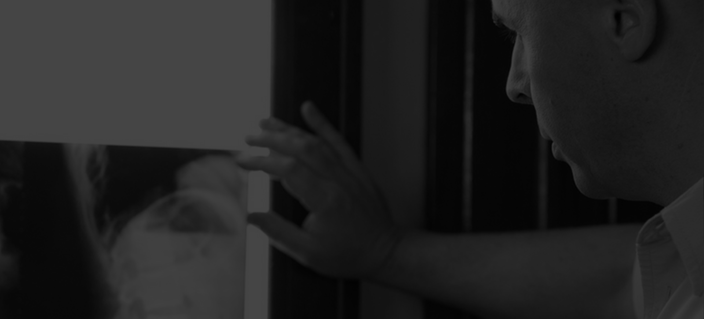

TU QUIROPRÁCTICO DE CONFIANZA
Marcelo Barroso Griffiths
Conoce mi formación, vocación y filosofía que guían mis ajustes y tu camino hacia una vida más saludable.
Escríbeme Más información
EN LOS MEDIOS
Notas y Entrevistas
Conocé mis apariciones en radio, TV y prensa, donde comparto mi visión sobre la quiropraxia y la salud.
Ver notas
¿POR QUÉ ME ELIGEN?
Un cuidado que marca la diferencia
Descubre por qué la quiropraxia te ayuda a recuperar el equilibrio, energía y bienestar en tu vida.
Saber más
Agendá tu consulta
¡Bienvenidos!
”Elegir avanzar es volver a vos”
Acompaño a quienes deciden dar ese primer paso consciente. Creo en la libertad de elegir y en el valor de volver a habitarse.
Porque vivir mejor es posible, y empieza por elegirte.
Enviame un mensaje
Compromiso activo

Potencia tu vitalidad

100% personalizado

Bienestar integral
Lo que marca la diferencia
Al detectar y ajustar las interferencias en la columna, la quiropraxia permite que tu sistema nervioso trabaje en su máximo potencial.
Brindándote más salud, bienestar y calidad de vida.
Más informaciónPreguntas frecuentes
El equilibrio detrás del éxito
Detrás de cada voz, cada actuación y cada logro profesional, hay algo en común: una columna cuidada.
Quienes eligen la quiropraxia como parte de su rutina saben que el verdadero rendimiento empieza con la salud.
Potenciá la vitalidad, concentración y equilibrio necesarios para alcanzar lo mejor en cada profesión.
Conocé mis entrevistasUbicación
Consultorio Quiropráctico “Vertebralle”
Ciudad de la Paz 1499, Belgrano - CABA
HORARIOS
| Lunes | 8:00 - 14:00 hs |
| Martes | 15:00 - 20:00 hs |
| Jueves | 13:00 - 18:00 hs |
| Viernes | 8:00 - 14:00 hs |